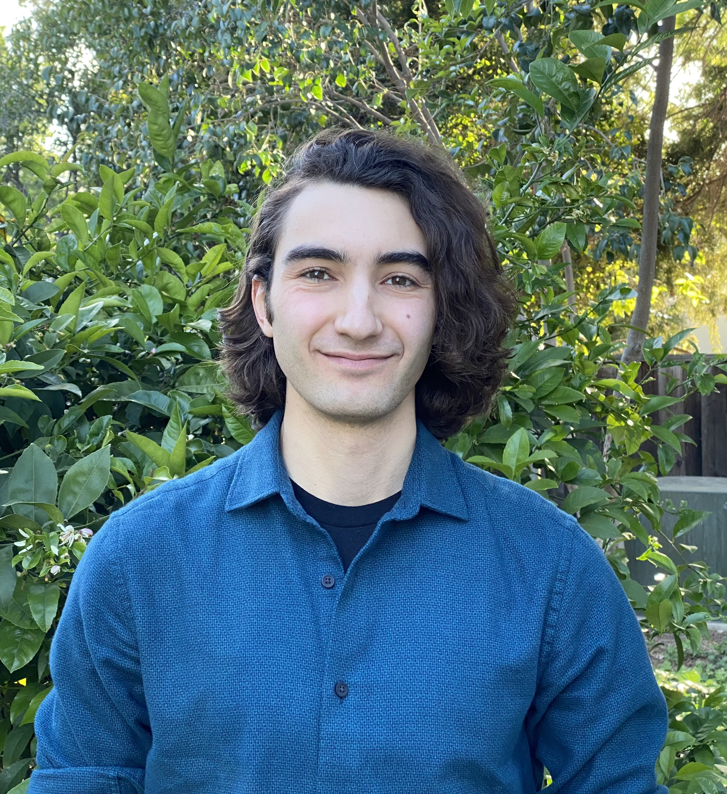

About Scott

I am a Carnegie Mellon University graduate, having studied electrical and computer engineering.
Most recently, I was a firmware engineer (C++/VHDL) at SpaceX and a DSP software engineer at Bose.
My interests are at the hardware/software boundary,
the complex interactions between sytems software, compilers, and processor architecture.
I also love signal processing.
I stayed at Carnegie Mellon for a fifth year to get a Masters in Computer Science,
focusing on optimizing compilers for memory access latency on novel scientific computer architectures.
I also have a passion for Byzantine history, running marathons, racing sailboats, the Greek language, and music.
You can reach me via my virtual address, at the bottom of the page.
My physical address is changing as I context switch between roles.
Selected projects
w/ threading library and hypervisor extensions
I'm currently doing these things
... specifically interested in microcode patching
Macintosh 512ke